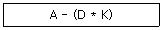
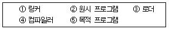
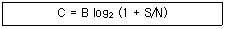

사무자동화산업기사 (2007-03-04 기출문제)
1과목: 사무자동화 시스템
1. 다음 중 그래픽 출력장치인 것은?
- 플로터
- OCR
- 마우스
- 디지타이저
(정답률: 82%)

2. 다음 중 팩시밀리에서 송신주사를 분류하였을 때 전자적 주사방식에 속하는 것은
- 원통주사
- 평면주사
- 고체주사
- 기계주사
(정답률: 74%)
3. 데이터베이스 관리시스템의 기능과 맞지 않는 것은?
- 데이터베이스 내의 자료관계를 설정한다.
- 자료의 보안을 담당하지 않아도 된다.
- 자료의 회복(recovery) 능력을 갖추고 있다.
- 질의어(query language) 능력을 갖추고 있다.
(정답률: 92%)
4. 다음 중 분산처리의 형태가 아닌 것은?
- 혼합형 분산처리 시스템
- 계층형 분산처리 시스템
- 수평형 분산처리 시스템
- 관계형 분산처리 시스템
(정답률: 43%)
5. 자료저장 기기로서 종이에 인쇄된 정보를 축소 촬영한 필름에 저장하는 기기는?
- CAR(Computer Assisted Retrieval)
- COM(Computer Output Microfilm)
- 광 디스크
- CD-ROM
(정답률: 65%)
6. 다음 중 사무자동화의 발전에 영향을 미친 것으로 볼 수 없는 것은?
- 산업구조가 농업 및 공업 중심 사회에서 정보화사회로 변하여 정보의 적기 활용이 요구되고 있다.
- 산업인력의 고학력화로 인하여 개인의 능력이 극대화되어 상대적으로 자동화의 필요성이 줄어들었다.
- 인건비 상승과 사무실 운영비용의 증가로 사무부분의 비용이 증가하고 있다.
- 통신기술의 발달과 함께 컴퓨터 이용이 보편화되었다.
(정답률: 91%)
7. 안전이나 법적인 이유로 한 번 기록된 후에는 변경해서는 안될 자료 즉, 은행이나 중개소의 거래내력 등을 보관하기 위한 것으로 가장 적당한 것은?
- CD-ROM
- WORM 디스크
- 소거 광디스크
- 플로피 디스켓
(정답률: 77%)
8. 다음 중 전자우편의 일반적인 특성이 아닌 것은?
- 빠른 정보수신
- 지역적 공간의 해결
- 빠른 의사결정
- 종이 및 우편 요금의 절약
(정답률: 90%)
9. 뉴미디어의 분류방법으로 정보를 전달하는 매체를 기준으로 한 분류방법에 속하지 않는 것은?
- 데이터계
- 무선계
- 유선계
- 패키지계
(정답률: 66%)
10. 다음 중 용어에 대한 설명으로 적합하지 않은 것은?
- DPS(Data Processing System)는 자료를 처리하기 위해 체계적으로 구성되어 있는 장치, 방식, 절차, 기술의 모임이다.
- CRM(Customer Relationship Management)은 기업 활동을 위해 사용되는 기업 내의 모든 인적, 물적 자원을 효율적으로 관리하여 기업의 경쟁력을 강화시켜주는 역할을 하는 통합정보 시스템이다.
- MIS(Management Information System)는 경영진과 관리진에게 투자, 판매, 보수, 자본계정, 환수계정 등 경영정보를 제공하는 자료의 처리체계를 말한다.
- MS(Management Science)는 문제해결의 방법으로 취급되는 통계적 결정론이나 선형계획법, 운영과학 등을 통칭한 분야이다.
(정답률: 50%)
11. 공중 전기 통신 사업자에게 임차한 통신 회선에 자신의 통신망을 연결시켜 메일박스 서비스나 프로토콜 변환, 포맷 변환 등의 부가가치 통신 서비스를 이용자에게 분할하여 재판매하는 통신처리망은?
- LAN
- WAN
- VAN
- ISDN
(정답률: 83%)
12. 다음 중 사무자동화의 목적으로 적당하지 않은 것은?
- 사무처리의 비용 절감
- 사무부분의 생산성 향상
- 사무처리의 질적 향상
- 사무원의 건강증진
(정답률: 96%)
13. CALS(Commerce At Light Speed)의 도입 효과와 거리가 가장 먼 것은?
- 비용절감 및 신속한 정보의 제공
- 처리시간의 단축 및 품질향상
- 종이 없는 환경구축과 인력절감
- 하나의 통신 회선으로 다양한 통신서비스 제공
(정답률: 69%)
14. 다음 중 운영체제에 해당하지 않는 것은?
- Windows XP
- Oracle
- Unix
- MS-DOS
(정답률: 89%)
15. 다음 중 CD-ROM과 DVD에 관한 설명으로 옳지 않은 것은?
- 1배속 CD-ROM의 전송속도는 150KB/초이다.
- DVD는 외형은 CD와 같으나 다른 포맷으로 저장되며 높은 용량을 갖는다.
- DVD는 CD-ROM과 다른 파장의 레이저를 사용하므로 DVD 플레이어는 기존 CD-ROM을 재생할 수 없다.
- CD-ROM과 DVD는 기록 표면에 레이저를 쏘아 반사 정도를 측정하여 데이터를 읽는다.
(정답률: 69%)
16. 인터넷 서비스에서 다른 컴퓨터를 자신의 컴퓨터와 같이 원격으로 사용할 수 있도록 지원해주는 것은?
- Telnet
- Archie
- FTP
(정답률: 84%)
17. 다음 단위 중 성격이 다른 하나는?
- bit
- byte
- word
- bps
(정답률: 79%)
18. 사진 등의 정지화상을 압축하는 기술의 표준은?
- JPEG
- MPEG
- DDP
- FED
(정답률: 95%)
19. 사무자동화시스템의 주요기능과 거리가 먼 것은?
- 문서화 기능
- 정보활용 기능
- 통신 기능
- 분업화 기능
(정답률: 69%)
20. 사무자동화의 평가 방법 중 정성적 평가에 해당되는 것은?
- 사무환경 개선에 따른 업무 만족도
- 인력의 능률적 활용
- 공간의 효율적 사용
- 업무 시간의 효율적 활용
(정답률: 79%)
2과목: 사무경영관리 개론
21. 다음 중 사무 표준화의 대상이 아닌 것은?
- 정책(policies)
- 재료(materials)
- 방법(methods)
- 보안(securities)
(정답률: 74%)
22. 국제 표준으로 규정한 “정보교환을 위한 7비트 문자 집합”으로, 정보처리시스템이나 데이터 통신 관련기기 상호간의 정보교환에 사용되는 부호(코드)는?
- ISO 코드
- IEEE 코드
- ITU 코드
- OSI 코드
(정답률: 51%)
23. 사무조직은 크게 집중화와 분산화로 구분된다. 다음 중 집중화의 장점으로 가장 거리가 먼 것은?
- 환경변화에 신속하게 대응할 수 있다.
- 감독이 용이하고 사무량 측정이 용이하다.
- 사무의 요구에 따른 인원의 육성이 용이하다.
- 작업량의 균일화가 가능하다.
(정답률: 66%)
24. “사무는 경영의 정보를 행동으로 연결시키는 과정”이라고 주장한 사람은 누구인가?
- 포레스터(J.W. Forrester)
- 달링톤(G,M. Darlington)
- 힉스(C.H. Hicks)
- 딕시(L.R. Dicksee)
(정답률: 60%)
25. 국가 차원의 정보화촉진기본계획은 어떻게 수립되는가?
- 대통령 직속의 정보화추진실무위원회에서 수립한다.
- 국무총리 소속하의 정보화추진위원회에서 수립한다.
- 관계 중앙행정기관의 장이 각각 수립한다.
- 정보통신부장관이 관계 중앙행정기관별 부분계획을 종합하여 수립한다.
(정답률: 84%)
26. 다음 중 사무관리의 일반적인 순환구조로서 가장 적절한 것은?
- 계획화-보고화-조직화
- 계획화-조직화-통제화
- 계획화-통제화-보고화
- 조직화-통제화-보고화
(정답률: 84%)
27. 사무자동화의 효과로 볼 수 없는 것은?
- 시설비 및 관리비 증가 효과
- 행정사무의 신속하고 정확한 처리효과
- 표준 서식을 사용함으로써 불편해소의 효과
- 보존 공간 절약으로 주변, 사무실 환경개선의 효과
(정답률: 66%)
28. 동작의 경제원칙을 가장 잘 나타내고 있는 것은?
- 발로 할 수 있는 일은 오른손을 사용한다.
- 왼손으로 할 수 있는 것은 오른손을 사용하지 않는다.
- 가능한 한 양쪽이 동시에 작업을 시작하되 끝날 때는 각각 끝나도록 한다.
- 동작의 경제원칙은 본래 생산작업을 대상으로 만들어졌기 때문에 사무작업에는 응용할 수 없다.
(정답률: 77%)
29. 다음 경영조직의 형태 중 성격이 다른 하나는?
- 라인(line) 조직
- 직선 조직
- 군대식 조직
- 스탭조직
(정답률: 56%)
30. 다음 중 사무실 배치의 일반적인 원칙이라고 볼 수 없는 것은?
- 고객이 많은 부서는 입구근처에 배치한다.
- 가능한 독방을 사용할 수 있도록 배치한다.
- 업무상 관련이 깊은 부서는 가능한 한 가깝게 둔다.
- 큰방을 우선적으로 고려한다.
(정답률: 91%)
31. 다음 중 경제협력개발기구의 약어는?
- G7
- OECD
- ECONO
- EU
(정답률: 90%)
32. 다음 중 프로그램 저작권의 유효기간은?
- 프로그램이 공표된 경우, 공표된 연도부터 100년간 존속
- 프로그램이 공표된 다음 연도부터 50년간 존속
- 프로그램이 공표가 안된 경우에는 창작 연도부터 10년간 존속
- 프로그램이 공표가 안된 경우에는 창작 연도부터 20년간 존속
(정답률: 85%)
33. 자료의 십진분류 방법 중에서 우리나라의 일반자료의 분류에 많이 사용되는 분류법은?
- DOC
- UDC
- NDC
- KDC
(정답률: 92%)
34. 과학적 사무관리를 위한 기본적 단계 중 첫 번째 단계는?
- 자료의 수집
- 가설의 공식화
- 해결책의 적용
- 문제의 인식
(정답률: 87%)
35. 사무자동화에 이용되는 동작연구와 시간연구의 기법과 거리가 먼 것은?
- 서식 절차 도표
- 기구 도표
- 작업 도표
- 서식 경략 도표
(정답률: 68%)
36. 사무조직화의 일반원칙을 가장 적합하게 설명한 것은?
- 조직을 효율적으로 관리하기 위한 일련의 계통이 설정되어, 그 책임과 권한이 완전하게 행사되어야 한다.
- 할당된 직무는 충분히 많아야 하며, 책임이 상호간 중복되어야 한다.
- 직원 각자의 책임과 권한의 균형을 도모하기 위하여 이중 위임을 활성화 한다.
- 한 사람의 관리자가 직접 감독할 수 있는 부하 직원의 수나 조직의 수는 관리자의 능력에 따라 제한이 없다.
(정답률: 73%)
37. EDI(Electronic Data Interchange)에 대한 설명으로 가장 적절한 것은?
- 기업이 기업만을 대상으로 각정 서비스나 물품을 판매하는 방식을 말한다.
- 기업 간 데이터를 효율적으로 교환하기 위해 지정한 데이터와 문서의 표준화 시스템이다.
- 종이 서류 대신 전산망을 이용하여 문서의 승인이나 신고 등의 업무를 처리하는 시스템이다.
- 어떤 특정한 목적의 응용을 위해 상호 연관성이 있도록 자료를 저장하고 운영할 수 있도록 모아둔 것이다.
(정답률: 84%)
38. 다음 중 사무작업의 효율화를 위한 동작경제의 원칙에 해당하지 않는 것은?
- 인체 사용에 관한 원칙
- 작업장의 배열에 관한 원칙
- 공구 및 장비의 설계에 관한 원칙
- 작업원의 써블릭 원칙
(정답률: 70%)
39. “컴퓨터 등 정보처리 능력을 가진 장치에 의하여 전자적인 형태로 작성되어 송·수신 또는 저장된 문서형식의 자료로서 표준화된 것”을 의미하는 것은?
- 공문서
- 전자문서
- 프로그램
- 프로토콜
(정답률: 64%)
40. 프로그램 저작권에 관한 사항을 심의하고 분쟁을 조정하기 위한 기구는?
- 한국정보사회진흥원
- 프로그램심의조정위원회
- 통신위원회
- 정보화추진위원회
(정답률: 72%)
3과목: 프로그래밍 일반
41. PCB의 내용이 아닌 것은?
- 할당되지 않은 주변 자원의 정보
- 프로세스 이름 및 고유 식별자
- 프로세스 우선 순위
- 프로세스의 현재 상태
(정답률: 49%)
42. C언어에서 문자형 자료 선언시 사용하는 것은?
- char
- int
- float
- double
(정답률: 61%)
43. 운영체제를 수행 기능에 따라 분류할 경우 제어 프로그램에 해당하지 않는 것은?
- 감시 프로그램
- 데이터 관리 프로그램
- 언어 번역 프로그램
- 작업 제어 프로그램
(정답률: 79%)
44. EBNF에서 { }를 사용하는 이유는?
- 블록(block)을 나타내기 위해 사용한다.
- 생략 가능한 것을 나타내기 위해 사용한다.
- 반복되는 부분을 나타내기 위해 사용한다.
- 선택사항을 나타내기 위해 사용한다.
(정답률: 84%)
45. 다음 중 시스템 프로그래밍에 가장 적당한 언어는?
- BASIC
- C
- COBOL
- FORTRAN
(정답률: 88%)
46. 고급 언어에 대한 설명으로 옳지 않은 것은?
- 컴파일 과정 없이 실행 가능하다.
- 저급 언어보다 배우기 쉽다.
- 기종 간에 큰 차이가 없어 호환성이 높다.
- COBOL은 고급 언어에 해당한다.
(정답률: 49%)
47. 구조적 프로그래밍과 거리가 먼 것은?
- GOTO문
- 순차실행문
- 선택실행문
- 반복실행문
(정답률: 59%)
48. 프로그램 개발 과정에서 프로그램 안에 내재해 있는 논리적 오류를 발견하고 수정하는 작업을 무엇이라고 하는가?
- 링킹(linking)
- 바인딩(binding)
- 로딩(loading)
- 디버깅(debugging)
(정답률: 93%)
49. 다음 중위식(infix)을 후위식(postfix)으로 옳게 표현한 것은?

- A D K * -
- - A * D K
- A D K - *
- - * A D K
(정답률: 85%)
50. 프로그램 문서화의 목적으로 거리가 가장 먼 것은?
- 프로그램 개발팀에서 운용팀으로 인계인수를 쉽게 할 수 있다.
- 사고 발생시 책임 구분을 명확히 할 수 있다.
- 프로그램 개발 중 추가 변경에 따른 혼란을 감소시킬 수 있다.
- 프로그램 개발 후 유지 보수가 용이하다.
(정답률: 76%)
51. 프로그램을 작성하는 과정에서 컴퓨터에 의하여 직접 실행되는 명령어들이 아니라, 프로그램을 읽어 이해하기에 도움이 되는 내용들을 기록한 부분으로 프로그램의 판독성을 향상시키는 요소를 무엇이라고 하는가?
- 예약어(reserved word)
- 주석(comment)
- 연산식(expression)
- 식별자(identifier)
(정답률: 51%)
52. 프로세스의 정의로 적당하지 않은 것은?
- PCB를 가진 프로그램
- 동기적 행위를 일으키는 단위
- 프로세서가 할당되는 실체
- 실행중인 프로그램
(정답률: 45%)
53. 프로그램 수행 순서가 옳은 것은?

- ②→④→⑤→①→③
- ⑤→④→②→①→③
- ②→③→④→①→⑤
- ④→①→③→②→⑤
(정답률: 89%)
54. C언어에 대한 설명으로 옳지 않은 것은?
- 효율성이 좋아. 대규모의 프로그램을 만들 수 있다.
- 포인터에 의한 번지 연산 등 다양한 연산 기능을 가진다.
- 인터프리터 기법의 언어이다.
- 이식성이 높은 언어이다.
(정답률: 54%)
55. 컴파일 과정 중 원시 프로그램을 하나의 긴 스트링으로 보고 원시 프로그램을 문자 단위로 스캐닝하여 문법적으로 의미있는 일련의 문자(토큰)들로 분할해 내는 작업은?
- 구문분석
- 원시분석
- 선행처리
- 어휘분석
(정답률: 69%)
56. 단항 연산에 해당하지 않는 것은?
- AND
- MOVE
- NOT
- SHIFT
(정답률: 53%)
57. 요소 선택과 삭제는 한쪽에서, 삽입은 다른 쪽에서 일어나도록 제한하는 것은?
- 큐
- 스택
- 트리
- 방향 그래프
(정답률: 55%)
58. 주기억장치 배치 전략 중 입력된 프로그램을 수용할 수 있는 공간 중 가장 큰 공백에 할당하는 전략은?
- Fitst-Fit
- Best-Fit
- Worst-Fit
- Large-Fit
(정답률: 49%)
59. 구문 분석기가 처리한 문장에 대해 그 문장의 구조를 트리 형태로 표현한 것을 무엇이라 하는가?
- 형태 트리
- 문장 트리
- 파스 트리
- 표현 트리
(정답률: 90%)
60. 운영체제의 목적으로 거리가 먼 것은?
- 신뢰도 향상과 응답 시간의 증가
- 사용자와 컴퓨터 간의 인터페이스 제공
- 자원의 효율적 관리를 위한 스케줄링
- 프로세서, 기억장치, 입/출력장치 등의 자원 관리
(정답률: 55%)
4과목: 정보통신 개론
61. 8위상 변조와 2진폭변조를 혼합하여 변조속도가 1200[baud]인 경우, 이는 몇 [bps]에 해당 되는가?
- 1200
- 2400
- 3600
- 4800
(정답률: 66%)
62. LAN에서 사용되는 매체 액세스 제어(Access Control)기법과 관련 없는 것은?
- TOKEN-BUS
- CDMA
- CSMA/CD
- TOKEN-RING
(정답률: 47%)
63. 통신 프로토콜(protocol)의 기본 요소에 해당하지 않는 것은?
- 포맷(format)
- 구문(syntax)
- 의미(semantics)
- 타이밍(timing)
(정답률: 57%)
64. OSI 7계층 중에서 정보의 형식 설정과 코드의 변환, 암호화, 압축 등의 기능을 수행하는 계층은?
- 네트워크 계층
- 트랜스포트 계층
- 데이터링크 계층
- 프리젠테이션 계층
(정답률: 67%)
65. 패킷교환망의 특징으로 가장 옳지 않은 것은?
- 장애 발생시 대체 경로 선택 불가능
- 프로토콜 및 속도 변환 가능
- 대량의 데이터 전송시 전송 지연이 발생될 수 있음
- 표준화된 프로토콜 적용
(정답률: 78%)
66. DTE와 DCE를 접속할 때 고려하여야 할 특성으로 적합하지 않은 것은?
- 전기적 특성
- 기계적 특성
- 기능적 특성
- 통신적 특성
(정답률: 51%)
67. 다음 중 패킷교환망에 흐르는 패킷수를 적절히 조절하여 전체시스템의 안전성을 기하고 서비스의 품질저하를 방비하는 기능은?
- look up
- polling
- flow control
- closed connection
(정답률: 74%)
68. 다음 중 LAN의 활용 목적과 관계가 가장 적은 것은?
- 공장자동화에 있어 근거리내 CAD/CAM 등 각종 정보의 공유
- 본사의 주컴퓨터와 원격지점간의 정보의 교류
- 사무실내의 전자우편, 문서처리 및 분배
- 단일 건물의 연구소내 고속프린터의 공유
(정답률: 47%)
69. ATM 셀의 헤더 길이는 몇 byte 인가?
- 2
- 5
- 8
- 10
(정답률: 52%)
70. 다음 중 HDLC 프레임의 구조가 순서대로 옳은 것은?
- 플래그-주소부-제어부-정보부-FCS-플래그
- 플래그-제어부-FCS-정보부-주소부-플래그
- 플래그-주소부-정보부-FCS-제어부-플래그
- 플래그-제어부-FCS-주소부-정보부-플래그
(정답률: 50%)
71. 다음 중 회선의 상태에 따라 동적으로 프레임의 길이를 변경시켜 전송하는 것은?
- Selective Repeat ARQ
- Adaptive ARQ
- Go-back-N ARQ
- Stop and Wait ARQ
(정답률: 53%)
72. 다음은 잡음이 있는 통신채널의 경우 통신용량을 표시하는 식이다. 여기서 기호가 바르게 표현된 것은?

- C : 신호전략
- B : 대역폭
- S : 잡음전력
- N : 통신용량
(정답률: 78%)
73. 다음 중 서로 다른 프로토콜을 사용하는 망을 연결하는데 사용되는 것은?
- 리피터(repeater)
- 게이트웨이(gateway)
- 서버(server)
- 클라이언트(client)
(정답률: 78%)
74. 비동기식(asynchronous) 데이터 전송방식에 관한 설명으로 틀린 것은?
- 동기식보다 주로 저속도의 전송에 이용된다.
- 문자의 앞쪽에 Start bit가 위치한다.
- 문자의 뒤쪽에 Stop bit를 갖는다.
- 데이터 묶음의 앞에 동기문자가 있다.
(정답률: 65%)
75. 다음 중 2개 이상의 신호를 결합하여 하나의 회선을 통해서 전송할 수 있는 기법은
- CRC(Cyclic Redundancy Code)
- Multiplexing
- FEC(Forward Error Correction)
- LRC(Longitudinal REdundancy Code)
(정답률: 58%)
76. 다음 중 동선 케이블에 비해 광섬유 케이블의 장점이 아닌 것은?
- 누화가 없다.
- 광대역성이다.
- 보안성이 우수하다.
- 전기적 유도가 발생된다.
(정답률: 85%)
77. 다음 중 가상회선(Virtual Circuit)의 서비스 유형은?
- 비접속형 통신서비스
- 메시지교환 통신서비스
- 연결지향형 통신서비스
- 회선교환 통신서비스
(정답률: 27%)
78. 피변조파로부터 원래의 신호파를 만드는 것을 무엇이라 하는가?
- 변조
- 복조
- 증폭
- 발진
(정답률: 54%)
79. 다음 중 에러검출과 정정이 가능한 것은?
- 수평패리티검사
- 수직패리티검사
- 정마크부호
- 해밍(Hamming) 부호
(정답률: 86%)
80. 정보통신시스템에서 통신제어장치의 기능이 아닌 것은?
- 데이터 송·수신제어
- 전송 오류의 검출
- 디지털신호를 아날로그신호로 변환
- 회선의 감시 및 접속제어
(정답률: 70%)